▲ 제31회 부산국제영화제의 주 행사장인 영화의전당 사진=한국관광공사
2026년 10월 6일 개막식 저녁, 영화의전당 앞에는 관객용 지정 주차 공간이 없다. BIFF 공식 '개폐막식 안내'가 직접 밝힌 내용이다. 개·폐막식 당일에는 영화의전당 주변 차량 진입이 통제되고, 자차를 이용한다면 벡스코나 인근 백화점 같은 유료 주차시설을 이용하라는 것이 공식 안내다.
제31회 부산국제영화제(BIFF)는 10월 6일(화)부터 15일(목)까지 10일간 영화의전당 일대를 중심으로 열린다. 이 글은 관광 코스가 아니라 '영화제 기간에 어떻게 움직이고 어디에 차를 댈 것인가'에 초점을 맞춰, 공식 안내로 확인된 내용과 아직 확인되지 않은 내용을 나눠 정리했다. 해운대 자체의 명소·동선은 부산 해운대 가이드를, 부산 전반의 주차 요령은 부산 드라이브 명소 주차 가이드를 함께 참고하면 된다.
▲ 부산국제영화제의 주 행사장인 영화의전당 외관 사진=한국관광공사
1. 올해 BIFF, 어디서 무엇이 열리나 — 일정과 상영관
BIFF 보도자료에 따르면 제31회 부산국제영화제는 10월 6일(화)부터 15일(목)까지 영화의전당 일대에서 열린다. 지난해와 달리 개막일이 수요일에서 화요일로 하루 앞당겨졌다는 것이 스타뉴스 보도다. 같은 기간 제21회 아시아콘텐츠&필름마켓(ACFM)은 10월 10일(토)~13일(화) 일정이고, BIFF 배지 안내에 따르면 올해 ACFM은 벡스코에서 열린다. 개막작은 김종관 감독의 〈낮과 밤은 서로에게〉다.
스타뉴스와 한국경제는 공식 초청작 246편을 포함해 총 315편이 8개 극장·31개 스크린에서 상영된다고 전했다. 다만 BIFF 공식 '상영관 운영 안내' 페이지에서 확인되는 상영관은 아래 센텀시티 일대 6곳이다. 나머지는 남포동 등 원도심 극장까지 합친 수치로 보이지만, 8곳의 전체 명단은 확인하지 못했다.
| 상영관 | 주소·위치 |
|---|---|
| 영화의전당 | 해운대구 수영강변대로 120 |
| CGV센텀시티 | 해운대구 센텀남대로 35, 신세계백화점 7층 (자차: 지하주차장 C게이트 입차 후 3·4번 홀 엘리베이터) |
| 롯데시네마 센텀시티 | 해운대구 센텀남대로 59, 롯데백화점 8층 (자차: 지하주차장 입차 후 엘리베이터) |
| 영화진흥위원회 표준시사실 | 해운대구 수영강변대로 130, 영화진흥위원회 2층 |
| 소향씨어터 우리은행홀 | 해운대구 센텀중앙로 55 |
| 부산시청자미디어센터 공개홀 | 해운대구 센텀중앙로 42 (2층) |
상영관은 여러 곳에 흩어져 있고, 공식 안내는 정시 상영이 원칙이며 상영 시작 15분 이후에는 입장이 제한된다고 밝힌다. 입장은 상영 15분 전부터 가능하다. 또 "각 상영관별 위치와 이동시간을 고려해 예매하라"고 당부한다. 즉 영화 두 편을 연달아 예매할 때 차로 이동해 다시 주차하는 것은 위험한 선택이다.
최신 상영 시간표와 행사장 지도는 BIFF 공식 홈페이지에서 확인할 수 있다. BIFF 상영관 운영 안내 바로가기
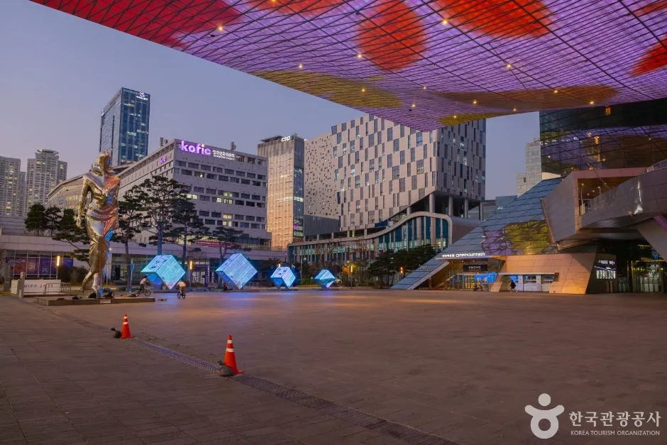
▲ 저녁 무렵의 영화의전당 앞 광장. 개막식 날에는 이 일대가 가장 붐빌 것으로 예상된다 사진=한국관광공사
2. "개막식 저녁이 가장 붐빈다" — 10월 6일 타임테이블과 교통통제
BIFF 공식 '개폐막식 안내'에 따르면 개막식은 10월 6일(화), 폐막식은 10월 15일(목)이며 두 날의 타임테이블은 같다. 관객·게스트 입장이 시작되는 오후 5시부터 교통 통제도 시작된다는 점이 핵심이다.
| 시간 | 내용 |
|---|---|
| 17:00~18:00 | 관객·게스트 입장 |
| 18:00~19:00 | 레드카펫 행사 |
| 19:00~20:00 | 공식 행사 |
| 20:20~21:40 | 개·폐막작 상영 (러닝타임에 따라 종료 시각 변경 가능) |
| 구간 | 통제 방식 | 시간 |
|---|---|---|
| 센텀서로 (뮤지엄 원~APEC 기후센터 앞) | 전면 통제 | 17:00~23:00 |
| 수영강변대로 (신세계몰 삼거리~영화의전당, 1개 차로) | 부분 통제 | 17:30~19:30 |
| 센텀5로 (영화의전당 옆 길) | 부분 통제 | 17:30~19:30 |
⚠️ 이렇게 읽으면 된다
통제는 레드카펫 행사와 교통 혼잡을 막기 위한 조치이고 저녁 퇴근 시간대와 정확히 겹친다. 2022년(제27회) 개막식에서도 부산경찰청이 비슷한 구간을 통제하며 "수영강변대로를 중심으로 해운대구 일대 정체가 예상되니 가급적 대중교통을 이용하고, 센텀중앙로·해운대로 등으로 우회해 달라"고 안내했다(부산일보). 개막식 관객이 아니더라도 10월 6일·15일 17시 이후에는 센텀시티 일대 운전을 피하는 것이 낫다.
✅ 개·폐막식 참석 전 공식 유의사항
· 반드시 지정된 좌석에 착석, 행사·상영 시작 전에 입장
· 캐리어·개인 이동 장치 등 대형 물품 반입 제한
· 뚜껑 없는 음료·주류·냄새가 강한 음식 반입 불가
· 상영 중 사진·영상 촬영 불가
· 참석자를 위한 AI 기반 다국어 통역 서비스 제공 (모바일 기기·이어폰 개인 지참)
타임테이블과 통제 구간 원문은 BIFF 공식 '개폐막식 안내'에서 확인할 수 있다. BIFF 개폐막식 안내 바로가기
3. 영화의전당 주차 — 평소 501면, 개·폐막식은 '지정 주차 없음'
영화의전당 공식 홈페이지의 '주차안내'에 따르면 최대 수용 주차는 501대(장애인용 20대 포함)이고 운영시간은 08:00~23:00이다. 요금 구조는 다음과 같다.
| 구분 | 내용 |
|---|---|
| 기본 | 30분 이내 출차 시 무료, 초과 시 30분당 1,000원 |
| 영화·공연 관객 | 4시간 이내 출차 시 무료 |
| 카페 이용 | 5,000원 이상 구매 시 1시간 무료 |
| 일일 최대 | 15,000원 |
| 50% 할인 | 경차·장애인·국가유공자·다자녀 가정·가족사랑카드 등재자, 부산시 배부 친환경차량 마크 부착 차량 |
이 표는 평상시 안내다. 영화제 기간에 이 무료·할인 조건이 그대로 적용되는지는 공식 자료로 확인하지 못했다. 무엇보다 BIFF는 개·폐막식 당일 지정 주차 공간이 없다고 밝혔다. 그 밖의 날에도 501면이 상영 시간대에 빠르게 찰 수 있으므로, 하루 종일 영화를 볼 계획이라면 영화의전당 주차는 '기대하지 않는' 편이 현실적이다.
주차장 운영시간과 요금은 영화의전당 공식 홈페이지에서 확인할 수 있다. 영화의전당 주차안내 바로가기
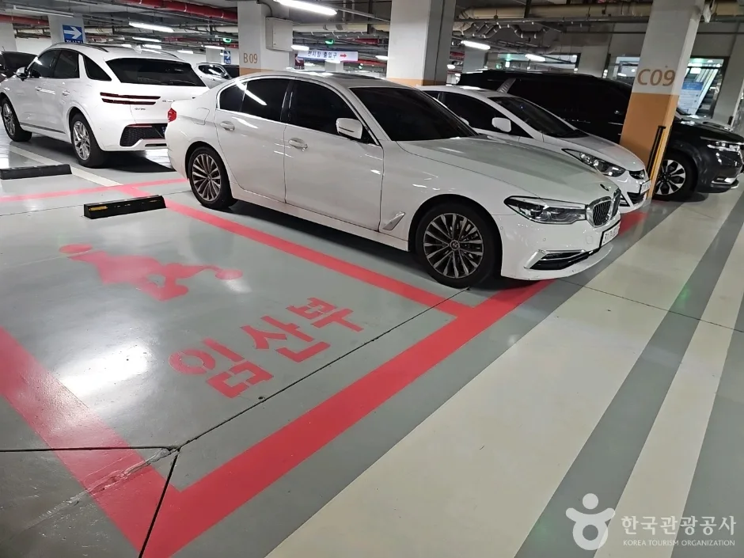
▲ 벡스코 실내 주차장. BIFF는 자차 이용 시 벡스코와 인근 백화점 등 유료 주차시설을 안내한다 사진=한국관광공사
4. 대중교통이 답이다 — 지하철·버스·KTX·공항 동선
영화의전당 공식 '오시는 길' 안내 기준으로 가장 간단한 방법은 부산 도시철도 2호선 센텀시티역 12번 또는 6번 출구에서 도보로 이동하는 것이다. 영화의전당 공식 안내는 도보 5분으로 적고 있으나, 다른 관광 안내에는 12번 출구 기준 12분으로 표기한 곳도 있다. 어느 쪽이 맞는지 공식 자료만으로는 확정할 수 없어, 붐비는 시간대에는 넉넉히 10분 이상 잡는 것이 안전하다.
| 출발 | 방법 |
|---|---|
| 지하철 | 2호선 센텀시티역 하차(12번·6번 출구) → 도보 |
| 버스(신세계백화점 앞 하차) | 5-1, 36, 39, 40, 63, 115, 139, 141, 155, 181, 307(좌석), 1001(급행), 1002(급행) |
| 김해공항 | 공항리무진 탑승 후 신세계백화점 하차 (안내상 약 50분 소요) |
| 부산역(KTX) | 역 앞 정류장에서 5-1, 40, 139, 1001번 버스 → 신세계백화점 앞 하차 → 도보 |
| 해운대역 | 역 앞 정류장에서 5-1, 31, 39, 63, 100, 100-1, 115-1, 139, 141, 181, 200-1, 1000-1번 등 → 신세계백화점 앞 하차 → 도보 |
노선 번호는 개편될 수 있으므로 출발 전 공식 안내를 다시 확인하는 것이 좋다. 영화의전당 오시는길 바로가기
센텀시티역은 CGV센텀시티·롯데시네마 센텀시티 이용에도 편하다. BIFF 상영관 안내는 CGV센텀시티에 도보·대중교통으로 갈 때 센텀시티역 12번 출구 앞 신세계백화점 4번 게이트를, 롯데시네마에는 지하철역 8번 출구와 이어진 롯데백화점 1층 정문을 이용하라고 안내한다.
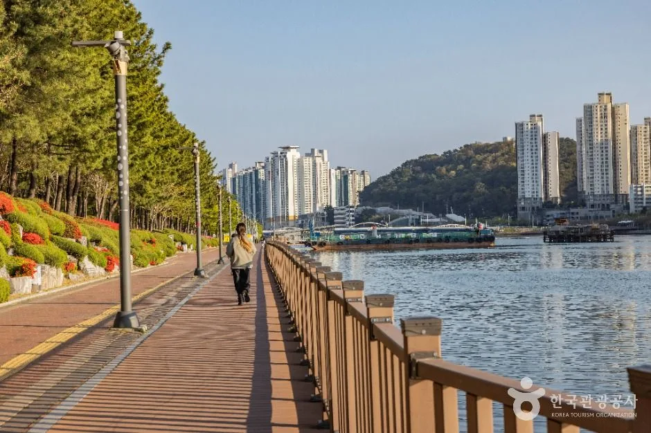
▲ 수영강변 산책 구간(센텀 APEC나루공원). 영화 상영 사이 짬 산책 코스로 쓰기 좋다 사진=한국관광공사
5. 그래도 차로 가야 한다면 — 벡스코·백화점 주차와 우회
BIFF 공식 안내는 자차 이용 시 "벡스코 및 인근 백화점 등 유료 주차시설"을 이용하라고 밝힌다. 벡스코의 요금과 운영 방식은 벡스코 공식 홈페이지에서 확인된다.
| 항목 | 내용 |
|---|---|
| 일반 요금 | 10분마다 450원 |
| 일일 주차(24시간) | 15,000원 |
| 운영 | 24시간, 주차 수요·교통 혼잡에 따라 조정될 수 있음 |
| 유예 | 입차 후 15분 이내 출차 시 요금 없음, 사전 무인정산 후 20분 초과 출차 시 정상 요금 |
| 할인 | 경차·저공해 1종 50%, 다자녀(부산시 주민) 50%, 장애인·국가유공자 1시간 무료 후 50% (증빙 필요) |
여기서 특히 조심할 점은 ACFM이 10월 10~13일 벡스코에서 열린다는 것이다. 이 기간 벡스코 주차장이 다른 행사 수요와 겹쳐 붐빌 수 있고, 벡스코 주차 여유 여부를 미리 예측할 자료는 확인하지 못했다. 벡스코 홈페이지에는 실시간 주차현황 메뉴가 있으니 출발 전에 보는 것이 좋다.
요금과 할인 조건은 벡스코 공식 홈페이지에서 확인할 수 있다. 벡스코 주차안내 바로가기
✅ 영화제 기간 자가용 방문 체크리스트
· 10월 6일·15일은 17시 이후 센텀서로·수영강변대로·센텀5로 일대 진입을 피하고, 통제 구간을 벗어난 우회로를 내비게이션으로 확인 (2022년 경찰은 센텀중앙로·해운대로 우회를 안내)
· 환승 방식: 벡스코 등에 주차한 뒤 지하철로 센텀시티역까지 이동 — 2호선에서 벡스코역과 센텀시티역은 인접해 있다
· 백화점 주차는 영화제 관객 전용이 아니므로 이용 조건(구매 금액, 시간)을 백화점에 사전 확인
· 씨네 클래스 등 일부 행사는 동서대-경남정보대 센텀캠퍼스 4층 북카페 라운지에서 열리고, BIFF는 "이 행사장에서는 주차 지원이 제공되지 않는다"고 안내
· 상영 종료 직후에는 출차 대기가 길어질 수 있어 시간 여유를 두고 이동
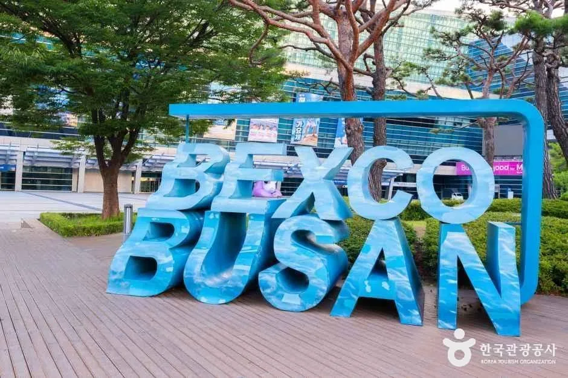
▲ 센텀시티 인근 대형 전시·컨벤션 시설 벡스코 사진=한국관광공사
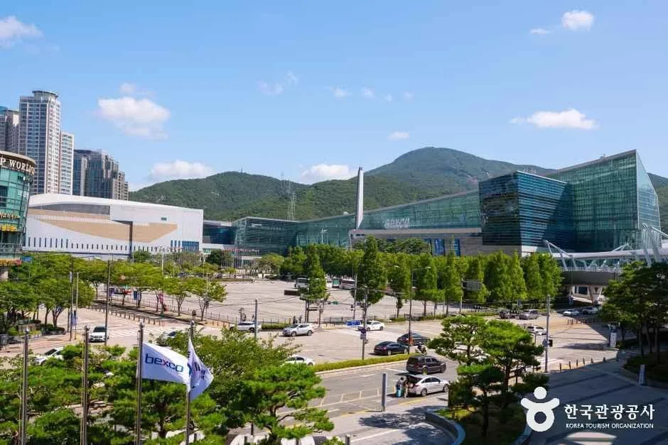
▲ 벡스코 일대 전경. ACFM이 열리는 10월 10~13일에는 더 붐빌 수 있다 사진=한국관광공사
6. '셔틀 3개 노선·전용주차장 3곳' 소문, 공식 안내와 대조해 봤다
일부 여행 블로그와 정보 사이트에는 "올해 BIFF 셔틀버스가 3개 노선(20분 간격)으로 확대됐다", "부산시가 방문객 전용 주차장을 영화의전당 인근 3곳에 마련했다"는 내용이 퍼져 있다. 이를 BIFF 공식 홈페이지의 개폐막식 안내·상영관 운영 안내·보도자료와 대조해 보면 다음과 같다.
| 소문 | 공식 안내에서 확인된 것 |
|---|---|
| 일반 관객용 셔틀 3개 노선, 20분 간격 | 확인되지 않음. 공식 페이지에서 셔틀이 확인되는 곳은 ACFM 마켓 배지 소지자용 '마켓셔틀 서비스'뿐 |
| 방문객 전용 주차장 3곳 | 확인되지 않음. 오히려 개·폐막식 당일 "지정 주차 공간이 없다"고 공지 |
| 대중교통 권장 | 공식 안내와 일치 (센텀시티 일대 혼잡 예상, 가급적 대중교통 이용) |
📍 어떻게 대응하나
일반 관객용 셔틀·임시주차장이 추후 공지될 가능성은 배제할 수 없지만, 지금 공식 근거는 없다. "없다"는 전제로 대중교통 중심 계획을 세우고, BIFF 공식 홈페이지 공지사항과 콜센터 1666-9177(영화제 기간 09:00~20:30)로 개막 직전에 다시 확인하는 것이 안전하다.
7. 상영 사이 남는 시간 — 해운대·센텀 코스와 남포동
영화제는 하루 종일 영화만 볼 수 있는 일정이 아니라 상영 사이 1~3시간의 빈 시간이 생긴다. 이럴 때 차를 다시 빼지 않고 지하철이나 걸어서 다녀올 수 있는 곳 위주로 골랐다. 한국관광공사 자료로 확인되는 장소들이다.
| 장소 | 주소 | 메모 |
|---|---|---|
| 센텀 APEC나루공원 | 해운대구 수영강변대로 85 | 수영강변 산책로, 영화의전당과 같은 수영강변대로 축 |
| 해운대 동백섬 | 해운대구 동백로 67 | 해안 산책로, 해운대해수욕장과 이어짐 |
| 해운대해수욕장 | 해운대구 해운대해변로 264 | 영화의전당에서 지하철로 이동 가능한 해변 |
| 부산 영화의 거리 | 해운대구 마린시티1로 91 일대 | 영화 관련 사진과 핸드프린트 조형물 |
| BIFF 광장(남포동) | 중구 구덕로 지하44 | 영화제 전야제·커뮤니티비프 행사장 |
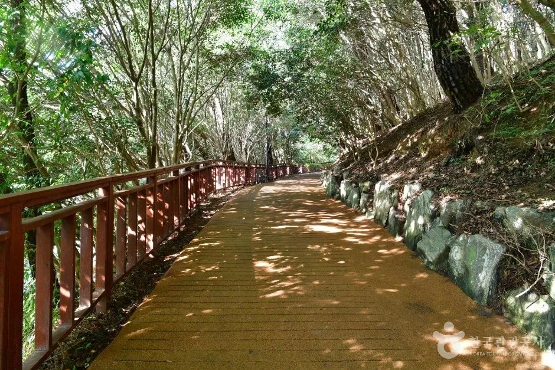
▲ 해운대 동백섬 산책로. 걷는 시간은 짧지만 도심 속 숲길을 걸을 수 있다 사진=한국관광공사
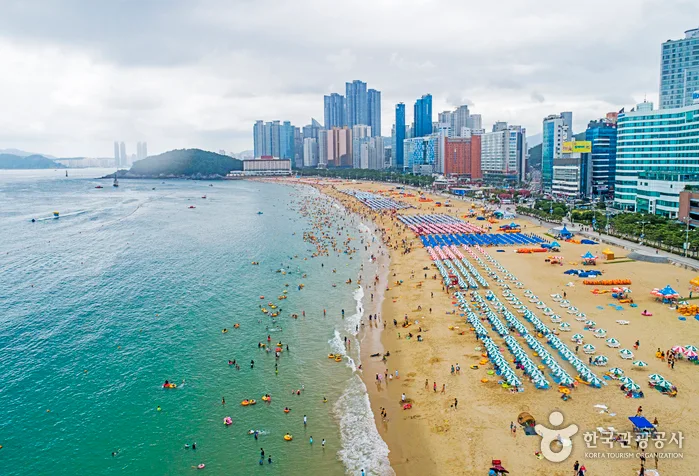
▲ 가을에도 걷기 좋은 해운대해수욕장 일대 사진=한국관광공사
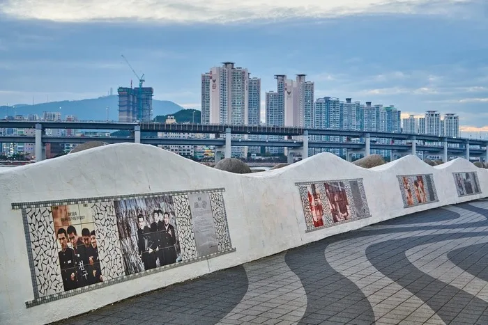
▲ 마린시티의 영화의 거리. 벽면에 영화 관련 사진과 손도장이 전시돼 있다 사진=한국관광공사
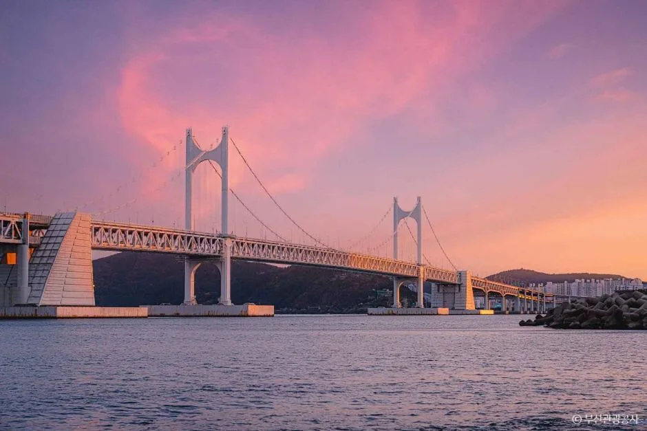
▲ 해 질 녘 광안대교. 상영이 끝난 저녁 드라이브 코스로 인기가 높다 사진=한국관광공사
남포동 BIFF 광장은 영화제의 뿌리 같은 곳이다. BIFF 공식 안내에 따르면 10월 5일(월) 전야제와 커뮤니티비프(10월 8일~11일)가 남포동 비프광장·메가박스 부산극장·가톨릭센터 공간 101.1에서 열린다. 영화의전당과는 거리가 있으므로 두 곳을 오가려면 차보다 지하철을 쓰는 편이 낫다.
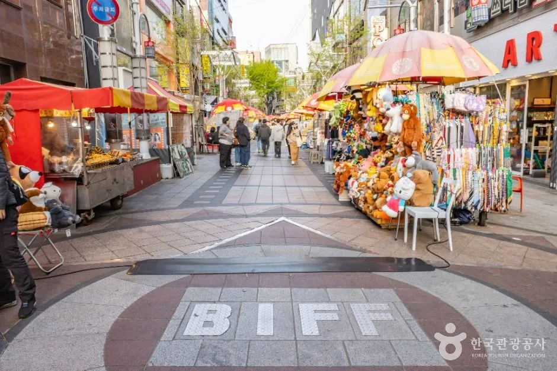
▲ 남포동 BIFF 광장 일대. 커뮤니티비프와 전야제가 열리는 곳이다 사진=한국관광공사
8. 예매·환불·문의 — 가기 전 확인할 것
BIFF 보도자료에 따르면 개막식·폐막식 등은 9월 17일(목), 일반 상영작·씨네 클래스·마스터 클래스는 9월 21일(월) 오후 2시에 예매가 시작됐다. 예매는 공식 홈페이지를 통해 진행되고, 영화제 기간에는 BIFF 매표소에서 잔여석과 취소된 좌석에 한해 구매할 수 있다. 개막일에는 영화의전당 야외매표소 현장 창구에서 익일 상영작만 예매할 수 있다.
| 항목 | 내용 |
|---|---|
| 예매 방식 | 일반 좌석은 온라인 예매, 상영코드별 최대 2매 |
| 현장 판매 | 온라인 매진되지 않은 좌석·취소표에 한해 BIFF 매표소 |
| 취소·환불 | 상영 시작 60분 전까지 (취소 수수료는 시점별 상이) |
| 입장 규정 | 상영 15분 전부터 입장, 시작 15분 후부터 입장 제한, 모바일 티켓 캡처본·알림톡으로는 입장 불가 |
| 모바일 티켓 | BIFF 매표소에서 제시하면 종이 티켓 발권 가능 |
| 고령자·장애인 창구 | 만 65세 이상·장애인 대상 한정 좌석 현장 판매, 올해는 모든 BIFF 매표소에서 당일·익일 상영작 예매 |
예매 일정과 취소 규정 원문은 BIFF 보도자료에서 확인할 수 있다. BIFF 예매 안내 보도자료 바로가기
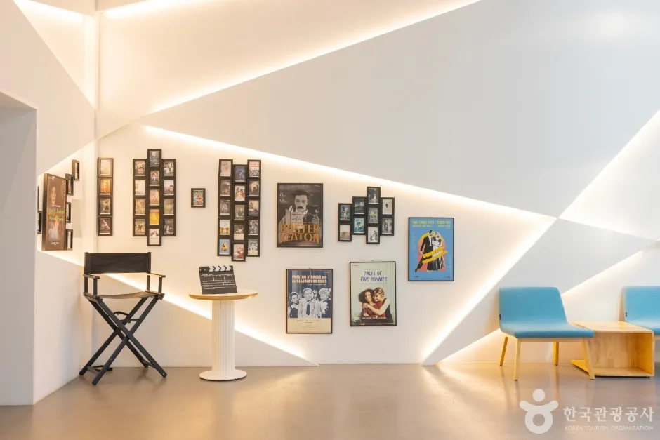
▲ 영화의전당 내부의 영화 관련 전시 공간 사진=한국관광공사
9. 요약
제31회 부산국제영화제는 2026년 10월 6일(화)~15일(목) 열린다. BIFF 공식 안내에 따르면 개·폐막식(10월 6일, 15일) 당일에는 지정 주차 공간이 없고 영화의전당 주변 차량 진입이 통제되며, 센텀서로는 17:00~23:00 전면 통제, 수영강변대로·센텀5로 일부는 17:30~19:30 부분 통제된다. 관객·게스트 입장은 17:00, 레드카펫은 18:00부터다.
가장 안정적인 이동 수단은 지하철 2호선 센텀시티역 12·6번 출구다. 자차라면 BIFF가 안내한 벡스코(소형 10분 450원·일일 15,000원)나 인근 백화점 주차장을 이용하되, 벡스코에서 ACFM이 열리는 10월 10~13일에는 혼잡 가능성을 염두에 둬야 한다. 일반 관객용 셔틀·전용주차장은 공식 근거를 찾지 못했다.